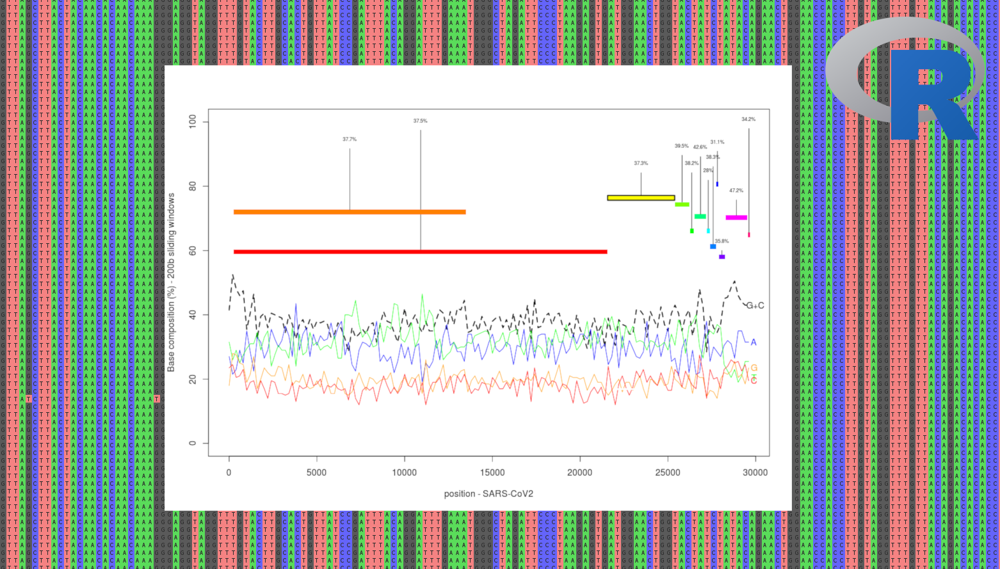

Courses
Population genomic approaches (Master & Phd students)
-Importance of premiminary analyses in population genomics (data: Whole-Genome Alignments, SARS-CoV2)

Course: PDF
Practical: PDF/HTML version.
[Left: Multiple SARS-CoV2 alignments]
-Detecting positive selection within genomes (data: Pool-seq data, European white oaks)
 Course: PDF
Course: PDF
Practical: PDF/HTML version.
[Left: plot created using the wonderful R package Circlize]
Introduction to data analysis - Learning statistis with R (undergrad students)
Introduction to bioinformatics (all levels)